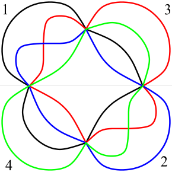
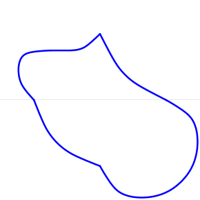
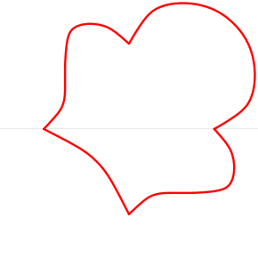
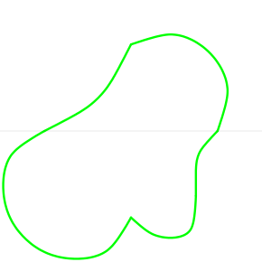

Since symmetric \(n\)-Venn diagrams only exist for prime \(n\text{,}\) it is natural to wonder what happens if we relax the definition to get other Venn diagrams with some other aspect of symmetry. Consider the various 3-Venn diagrams shown in Subsection 3.7.1. Diagrams #3.3, #3.4, #3.5, and #3.6 of Class 2 3.7.3 and Class 3 3.7.5 each have a reflective symmetry about a horizontal or vertical line. On first glance, diagrams #3.1 and #3.2 (Class 1 3.7.1) also appear to have at least one reflective symmetry, but they don’t. However, #3.1 and #3.2 do have a reflective symmetry if the color of the curves is ignored. Let us say that a Venn diagram is monochrome if the curves colors are ignored. If a Venn diagram is simple, then there is no loss of information since the curves can be uniquely recovered from the monotone version, but this is not true for non-simple diagrams. E.g., as monochrome Venn diagrams, #3.4 and #3.5 are indistinguishable, as are #3.3 and #3.6. Also worth noting is that if regions are colored by cardinality, then #3.3 and #3.6 remain indistinguishable, unlike #3.4 and #3.5. The above observations suggest that it might be interesting to look at Venn diagrams whose monochrome versions are symmetric, which is what we do below.
Consider the 4-Venn diagram below in Figure 4.7.1. It is not symmetric, but as a monochrome diagram it has a 2-fold rotational symmetry (among other symmetries). That is, a 180 degree rotation \(\tau\) of the diagram leaves it invariant if colors are ignored. But there is something deeper happening. Note that the top half of the black curve (1) is mapped by \(\tau\) to the bottom half of the blue curve (2), the top half of the blue curve is then mapped to the bottom half of the red curve (3), the top half of the red curve is mapped to the bottom half of the green curve (4), and the top half of the green curve is mapped to the bottom half of the black curve. In other words, if the top half of the diagram is rotated to the bottom half, and then the permutation \((1\ 2\ 3\ 4)\) is applied to the curve labels of the bottom half, then we obtain the full diagram.

Figure4.7.1.A pseudo-symmetric 4-Venn diagram.



Figure4.7.2.The curves of a pseudo-symmetric 4-Venn diagram.
Definition4.7.3.
An \(n\)-Venn diagram has \(p\)-fold pseudo-symmetry if there is a circular sector making up \(1/p\)th of it so that the rest of the diagram can be generated by repeatedly rotating the circular sector and recolouring the curves according to a fixed permutation \(\pi\text{.}\) We then say the diagram is \((n,p)\)-pseudo-symmetric.
The diagram shown in Figure 4.7.1 is \((4,2)\)-pseudo-symmetric, and the curves are labelled so that the permutation to be applied is \((1\ 2\ 3\ 4)\text{.}\) Just as with ordinary symmetric Venn diagrams, there is a limitation on the values that \(n\) and \(p\text{.}\)
Theorem4.7.4.
The permutation \(\pi\) in the definition of a \((n,p)\)-pseudo-symmetric Venn diagram must be circular.
Proof.
Assume that the permutation is not circular. We will derive a contradiction.
Theorem4.7.5.
In an \((n,p)\)-pseudo-symmetric Venn diagram \(p\) must be prime and \(n\) must be a power of \(p\text{;}\) i.e., \(n = p^k\) for some integer \(k \ge 1\text{.}\)
Proof.
Imagine the diagram as being divided into \(p\) equal sized circular sectors. Within each sector each region or partial region is interior to the same number of curves since the curves within successive sectors are just a relabeling by some permutation. Hence the \({n \choose k}\) sectors of rank \(k\) are equi-distributed within the \(p\) sectors. Thus, for \(0 \lt k \lt n\) we have that \(p\) divides \({n \choose k}\text{.}\) But this divisibilty condition is well-known to imply that \(n\) is a power of \(p\text{.}\) See, for example, Theorem 13 of [Si] .
Note that the preceeding theorem is also true for \((n,p)\)-monotone symmetric Venn diagrams.
Theorem4.7.6.
In an \((n,p)\)-pseudo-symmetric Venn diagram all \(n\) curves must be distinct; i.e., no two of the curves are congruent.
Proof.
TBA.
This idea forms a natural extension of traditionally symmetric Venn diagrams, which can be thought of as being composed of a single pie-slice forming \(1/n\)th of the diagram rotated \(n\) times. Thus, we can generalise this idea to a Venn diagram with two parameters, namely \(n\) and \(p\text{,}\) and a similar process of generating the rest of the diagram from the pie-slice forming \(1/p\)th of the diagram; namely copying the pie-slice and rotating the curve labels.
Ruskey and Weston, in [RW04] , also constructed, by hand, examples of pseudo-symmetric diagrams for the small cases \(n = 2^2 = 4\text{,}\)\(n = 2^3 = 8\text{,}\) and \(n = 3^2 = 9\text{.}\) The next open case is \(n = 2^4 = 16\text{,}\) which is far too large to construct by hand! Details of the method of construction can be found in [We03] ; the authors used a modification of the construction for symmetric \(n\)-Venn diagrams in [GKS] .